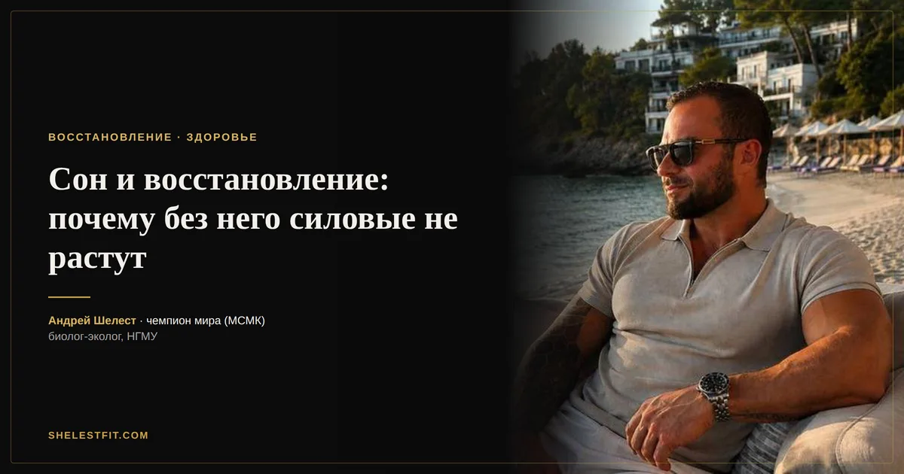

Сон и восстановление: почему без него силовые не растут
12 августа 2026 · Андрей Шелест

Тренировка сама по себе не результат, а только стимул. Результат строится во время восстановления, и здесь на первом месте сон, а не протеиновый коктейль сразу после зала. При этом сон обычно первое, чем жертвуют ради работы, тренировок и соцсетей.
Что происходит с гормонами при недосыпе
Один из самых цитируемых экспериментов на эту тему это работа Leproult и Van Cauter, опубликованная в JAMA в 2011 году. Молодых здоровых мужчин на неделю ограничили сном до 5 часов в сутки. Результат: дневной уровень тестостерона упал на 10-15%. Это эффект того же порядка, что естественное возрастное снижение тестостерона за 10-15 лет жизни, только вызванное одной неделей плохого сна.
Параллельно с этим при хроническом недосыпе растёт кортизол, гормон стресса, который работает прямо против ваших целей в зале: он способствует распаду мышечного белка и накоплению висцерального жира.
Как это бьёт по восстановлению мышц
Синтез мышечного белка активнее всего идёт именно во сне, особенно в фазах глубокого сна, когда пик секреции гормона роста. Недосып сокращает долю глубокого сна непропорционально сильно: страдает не весь сон поровну, а именно та часть, которая отвечает за восстановление тканей.
На практике это значит: та же тренировка, тот же протеин, тот же креатин, а прогресс медленнее, потому что тело физически не успевает восстановиться между сессиями.
Сколько сна реально нужно
Взрослому человеку нужно 7-9 часов. При регулярных силовых нагрузках разумно целиться в верхнюю границу этого диапазона, а не в нижнюю: тренировочный стресс сам по себе повышает потребность в восстановлении.
Отсыпаться на выходных лучше, чем ничего, но полностью компенсировать накопленный за неделю дефицит одна длинная ночь не может. Гормональные показатели восстанавливаются медленнее, чем ощущение бодрости.
Практические правила для тех, кто тренируется на результат
Регулярное время отбоя и подъёма, даже в выходные, разброс не больше часа. Тёмная и прохладная спальня: оптимальная температура для сна около 18-20 градусов. Без экранов за 30-60 минут до сна, потому что синий свет подавляет выработку мелатонина. Кофеин не позже, чем за 6-8 часов до сна, у него длинный период полувыведения.
И отдельно про тренировки вечером: если тяжёлая силовая перед сном мешает заснуть именно вам, сдвиньте её пораньше. Общего правила, что тренироваться вечером нельзя, не существует, но у части людей высокая интенсивность вечером реально бьёт по качеству сна.
Если поспать нормально не получается
Иногда 8 часов физически недостижимы: маленькие дети, сменная работа, форс-мажоры. В этом случае имеет смысл максимизировать качество того сна, что есть, а не посыпать себя виной за недостающие часы. И честно снизить ожидания по темпу прогресса на этот период: это не провал программы, это нормальная биология.
Автор: Андрей Шелест, тренер, чемпион мира (МСМК). Биолог-эколог, окончил Новосибирский государственный медицинский университет, специализация «экология человека».
Это ознакомительный материал, а не индивидуальная рекомендация. Схему под ваши анализы и цели я подбираю персонально.